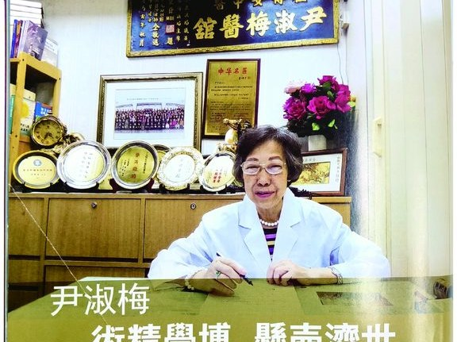
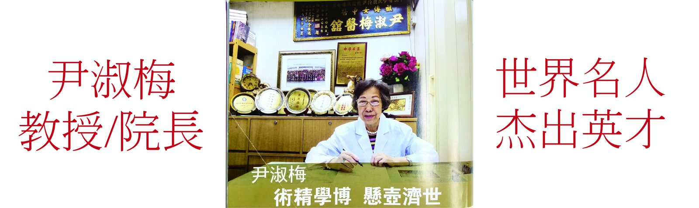
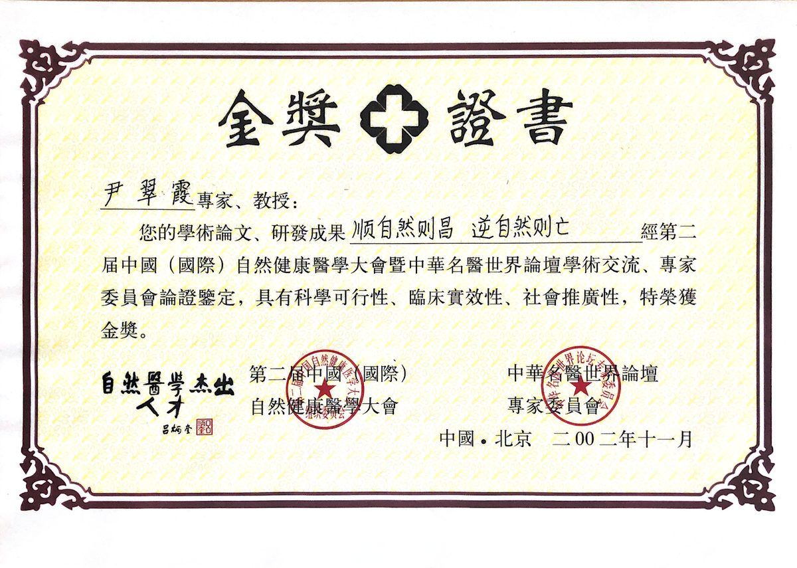
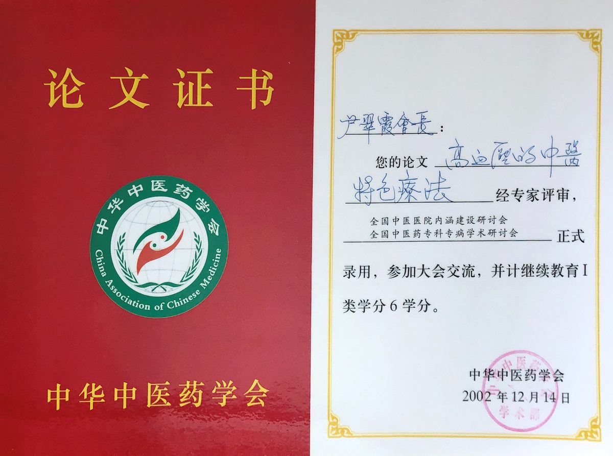
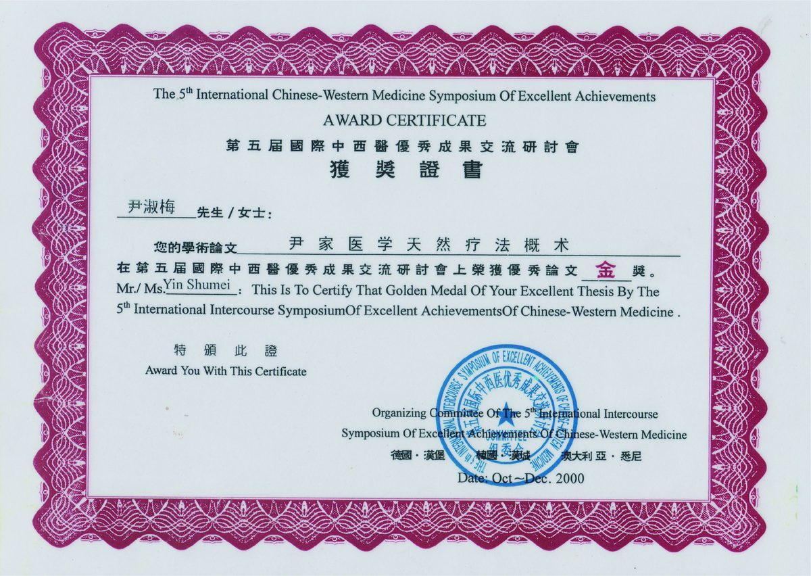
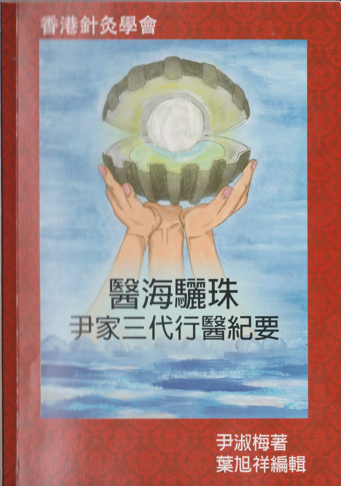
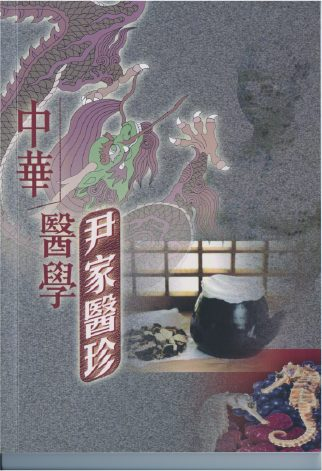
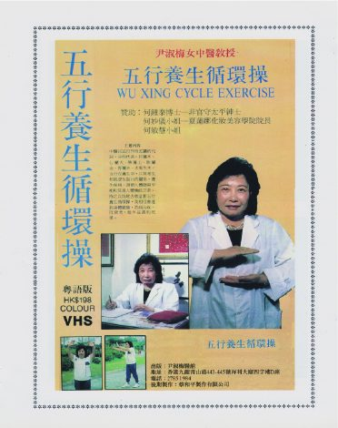

首頁 › 尹淑梅專區


世界名人 傑出英才
本專區介紹尹淑梅醫師事蹟與著作；產品查詢以 WhatsApp 為主要聯絡方式。
中山醫學院教授尹鏡波嫡傳孫女尹淑梅女士，是香港的註冊中醫師、中醫內科針灸教授，是香港中國醫藥學會永遠榮譽會長、香港中國醫藥研究院榮譽院長／教授、港九中醫工會名譽會長等眾多職務，在香港針灸學會連任多屆理事長。
她三代從醫，自己從醫五十多年，在香港、中國大陸、世界論壇發表了三十多篇醫學論文，先後榮獲第二屆中國國際自然健康醫學大會金獎、第五屆國際中西醫優秀成果交流研討會論文金獎，著有《中醫科學養生防治法》、《中華醫學尹家醫珍》、《尹家三代行醫紀要——醫海驪珠》，並由蔡和平製作有限公司錄製了她的《五行養生循環操》，並把自己平生積累下來的知識、經驗，授課和傳授給她的門徒學生，不愧是學子三千桃李滿園。
她的事蹟被收錄進《世界名人錄》、《香港英才錄》、《傑出人物榜》及《今日華人榜》，深受醫學界和港民的認可和贊頌。

順自然則昌 逆自然則亡
查看 →
論文證書・學術交流認可
查看 →
泰國曼谷・論文金獎
查看 →另據簡介：先後榮獲第二屆中國國際自然健康醫學大會金獎、第五屆國際中西醫優秀成果交流研討會論文金獎。

尹家三代行醫紀要
尹淑梅著

尹家醫學珍錄

蔡和平製作有限公司錄製
粵語版影音教材
尹淑梅醫師長年投身中醫藥學術交流、教育傳承與贈醫贈藥事務，曾任香港中國醫藥學會贈醫贈藥委員會主席，並連任香港針灸學會多屆理事長。透過論文發表、國際研討會與門徒授課，把三代從醫經驗傳予下一代，學子三千、桃李滿園。
下列為原尹淑梅醫館商店存檔所列項目（標示 HK$238）。可連至本站對應產品頁，或經 WhatsApp 查詢／下單。
盈康藥業有限公司就是在遵從了慈母尹淑梅的囑咐，傳承了慈母的醫藥的基礎上創建的。
「神農嘗百草始有醫藥」，中醫藥歷史源遠流長，從最早的《神農本草經》、唐代的《新修本草》到明代李時珍的《本草綱目》，前人的這些珍貴的藥物文獻記載了大量對養生、保健、治療的發現，堪稱舉世聞名的藥物學巨著。
盈康藥業有限公司將秉承中醫精華，心繫大眾健康，立志醫藥濟世，服務社稷！
| 專區 | 尹淑梅專區（盈康 ykimed.com） |
|---|---|
| 品牌 | 盈康（公開品牌）／尹淑梅醫師專區 |
| 客服 | WhatsApp 6222 7238（周一至周五 AM10:00–PM18:00，公眾假期除外） |
| 通路 | HKTVmall 專營店・本站產品頁・WhatsApp 查詢 |